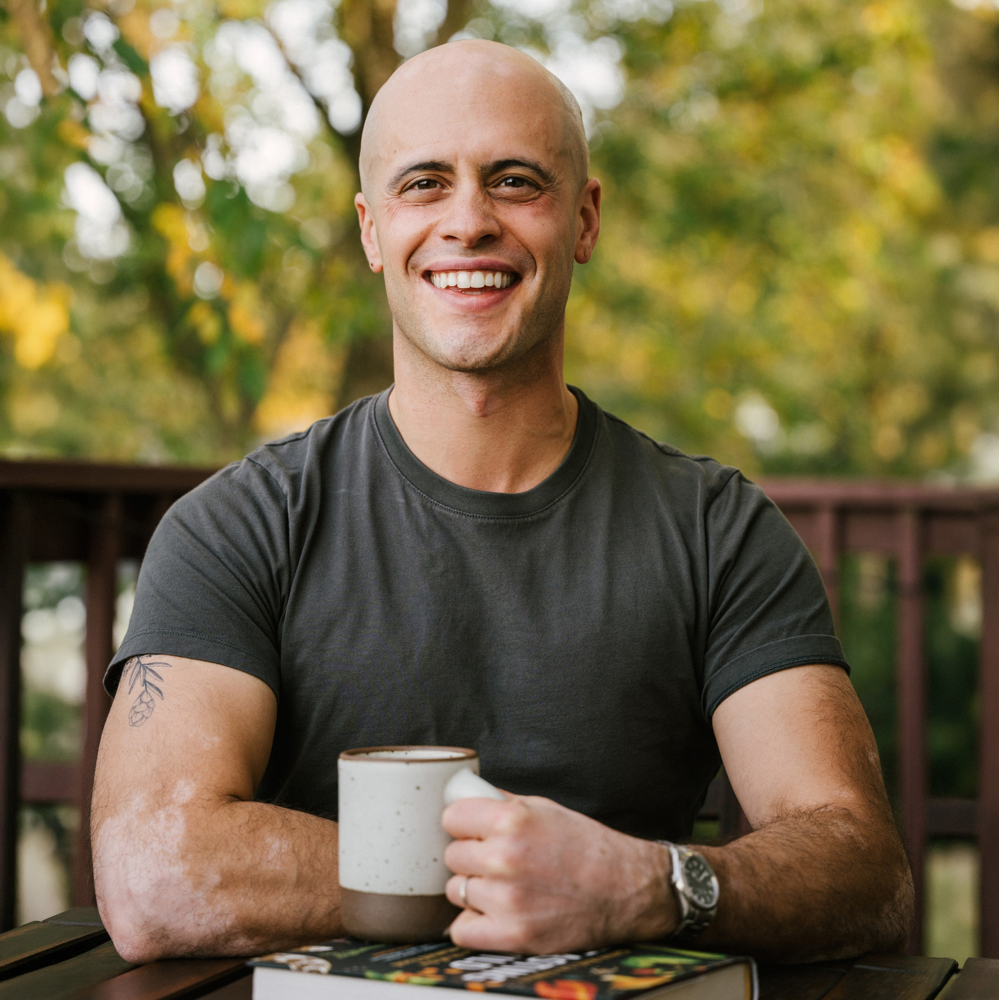
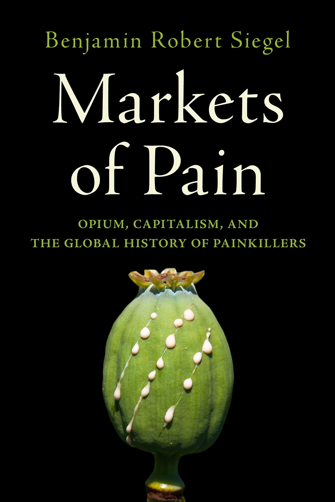
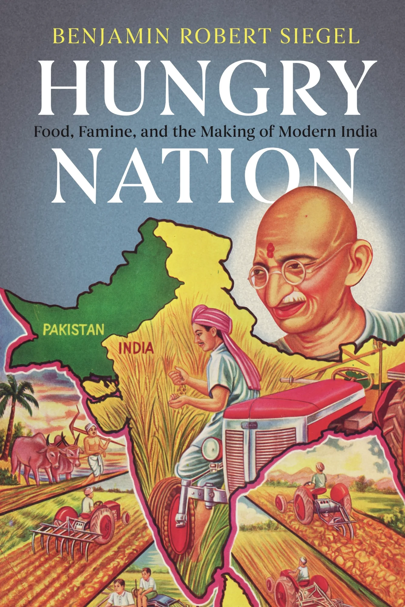

I'm a historian at Boston University and a former Time magazine reporter, writing about the global commodity systems that have shaped modern life — from the drugs in our medicine cabinets to the food on our plates.
My new book, Markets of Pain: Opium, Capitalism, and the Global History of Painkillers (Oxford University Press, 2026), is the sweeping story of how licit opium built empires, shaped global capitalism, and became the harbinger of today's opioid crisis — drawing on archives from India, Turkey, Australia, Europe, and the United States. My first book, Hungry Nation: Food, Famine, and the Making of Modern India (Cambridge, 2018), traced how food lay at the heart of India's postcolonial nation-building project. I'm now writing The Price of Protein (forthcoming from Ecco in the US and Monoray in the UK), a blend of history and reportage about how Big Food manufactured our hunger for protein, and what its abundance is costing our climate, our labor, and our politics.
Before academia, I reported from the Time bureaus in Delhi and Hong Kong; my journalism and essays have appeared in The New York Times, Time, Vice, Public Books, the Christian Science Monitor, World Policy Journal, and elsewhere. My academic work has been published in The American Historical Review, Modern Asian Studies, Environmental History, and other journals, and supported by fellowships from the American Council of Learned Societies, the Harvard Academy for International and Area Studies, and Yale's Program in Agrarian Studies.
I served as Associate Chair of History at Boston University from 2023 to 2025. I've spoken about my work at universities, the World Bank, and the United Nations, and at events across the United States, Canada, the UK, India, Pakistan, China, Germany, Switzerland, and Italy.
I live with my family and too many bicycles in Jamaica Plain, Mass., and Lecco, Italy.
My agent is Sarah Khalil at Calligraph; for other inquiries, write me directly.
Books

Oxford University Press · 2026
Markets of Pain
Opium, Capitalism, and the Global History of Painkillers

Cambridge University Press · 2018
Hungry Nation
Food, Famine, and the Making of Modern India
Ecco (US) · Monoray (UK) · Forthcoming
The Price of Protein
A global history of how Big Food manufactured our hunger — and what it costs us
Recent Talks
Writing
Media